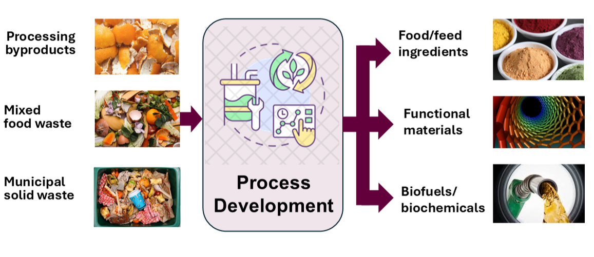

What We Do
Research
We combine food processing, resource recovery, bioprocess engineering, and process systems analysis to develop technologies that are scientifically sound, scalable, and economically viable.
Explore our research →People
We are a multidisciplinary team of students, postdoctoral researchers, and scientists working across food science, engineering, chemistry, and related fields.
Meet the team →Join Us
We are recruiting Ph.D. and M.S. students for Fall 2027. Students from food science, engineering, chemistry, and related disciplines are encouraged to apply.
Learn more →Group News
The five most recent updates from the lab — see the full archive for more.